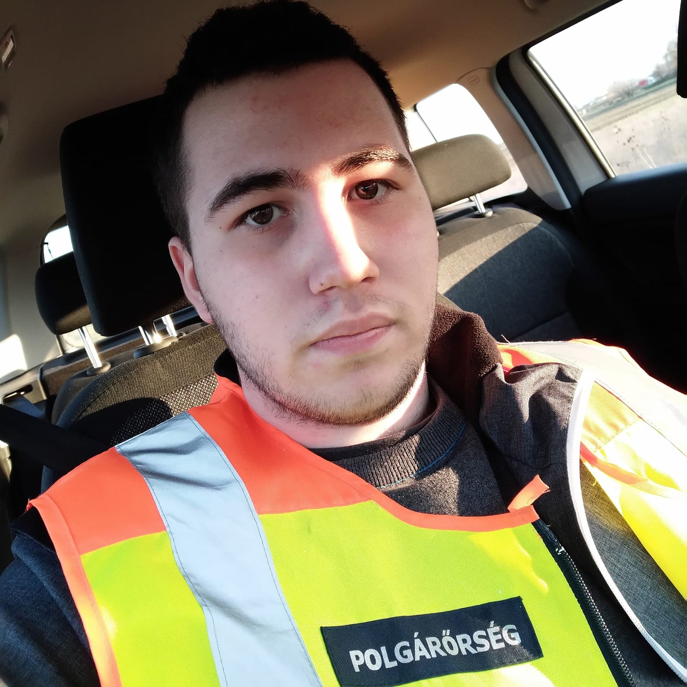

KI VAGYOK ÉN?
Katona Valentin Fábió vagyok, a SZÁMALK-Szalézi Tehcnikum és Szakgimnázium, Szoftverfejlesztő és Tesztelő szakos tanulója. Kiskorom óta már számítógép közelébe nevelkedtem fel és mindig érdekelt, miképpen épül fel egy számítógép. Nagyon sokszor megtörtént, hogy elrontottam valamivel, vagy valahogy szoftveresen a számítógépeket, így folyamatosan rohangáltunk a szervízhez. Már akkor tudtam, milyen szakmai ágon kell elhelyezkednem. Gimnáziumi éveimet már Informatikai Szakközépiskolába kezdtem, de mire én odajutottam, hogy komolyabban vegyem az Informatikát, addigra már általános Gimnáziummá alakult az intézmény. Az addig oktatott programozás és hálózatismeret már nem volt elérhető számomra. Ennek hatására szokszor megfordult a fejemben az, hogy mégsem Informatikával kellene foglalkozzak, így elkezdtem érdeklődni egyéb "szakmák" irányába is. Több szakmán is elgondolkodtam, például a Kamionsofőrködés nagyon vonzott, mivel kiskorom óta nagyon szerettem a kamionokat és a buszokat is. De a szívem mindig a Számítástechnika felé húzott, és a szüleim is ezt a vonalat preferálták. Ezek hatására két munka közül maradtam a programozás mellett, így a kamionozásról körülbelül egy év győzködés után sikerült lemondanom. Majd a harmadik évben feljött a szó, az előrehozott érettségiről. Az a lehetőség is adott egy teljesen új szemléletmódot, terveztem, hogy előrehozott érettségiben először középfokú, majd rendes érettségikor felsőfokú vizsgát teszek, így véglegesen az informatika mellett döntöttem.
MIÉRT PONT A SZÁMALK?
Sokszor gondolkodtam az Informatika két szakágán, a Rendszergazdán és a Programozóin. Végeredményben az utóbbit választottam, mivel tinédzser korom óta érdekelt egy program teljes felépítése Frontend és Backend terén is. Mivel én vidéken lakom, így a közeli iskolákban nem volt lehetőség az általam választott szakág tanulására. Érettségi előtt körülbelül egy évvel kezdtem el Programozói iskola felé kutakodni. Addigra már teljesen eldöntöttem, hogy mégis ezen a szakágon szeretnék elhelyezkedni. Hosszú keresgetés és rengeteg érdeklődés után kaptam az információt, hogy létezik ez az iskola, hogy nagyon sokan dicsérik. Egyik volt tanárom mondta, hogy ez egy nagyon jó iskola és mindenképp ide adjam be a jelentkezésemet, de készüljek fel arra, hogy magasak a követelmények, mert magas az oktatási színvonal is. Egyik ismerősöm a SZÁMALK falain belül végezte tanulmányait és ő is csak támogatni tudott ebben a döntésben és ajánlásával látta el az iskolát.
MIK A TERVEIM?
Sikeres felvételt követően rengeteg lehetőség nyílt meg előttem és így rengeteg tervem lett. Elsősorban a Java programozás az, ami nagyon érdekel, ez mellett a PHP és az SQL is vonz. Volt már, mikor próbálkoztam SQL-el is, de sajnos a tudás hiányában nem sikerült azokat a dolgokat véghezvinnem, amiket szerettem volna. Mivel állásajánlatot is kaptam a nyáron, így mindenképp, minél jobban megszeretném tanulni azokat, amiket az iskola az oktatása során nyújt. Ez után lenne lehetőségem esetleg az azonnali elhelyeszkedésre. Ezeken kívül egy dolog az, ami még igazán érdekel. Ez az elektronikus zenélés. Erről többet olvashatsz a "Zenei karrier" menüpont alatt, vagy IDE kattintva.